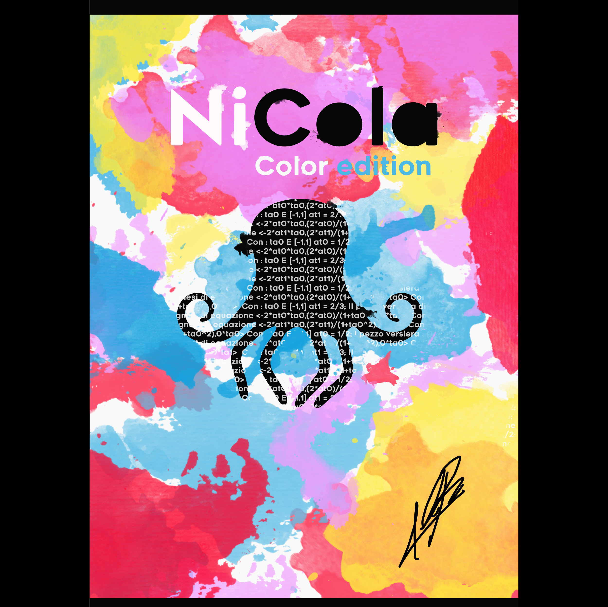

NICOLA: Design studiato sulla versiera di Agnesi.
(elaborato con Elio Raineri)
(elaborato con Elio Raineri)

La lattina è stata elaborata con Maya, mentre le grafiche con Photoshop ed Illustrator.
ale è il king del mondo
Accordo: Progetto realizzato per il corso di Elementi visivi per il Design.
(elaborato con Laura Scateni e Mattia Troiano)
(elaborato con Laura Scateni e Mattia Troiano)
Accordo è il progetto di un ristorante dove le portate saranno accompagnate da delle musiche specifiche per aumentare il piacere percepito del cibo.
infatti recenti studi hanno dimostrato che il tempo, il genere ed il volume possono cambiare la percezione del cibo.
ale è il king del mondo
Portineria Nendo: Progetto realizzato per il corso di Fondamenti del Progetto prendendo come Designer di riferimento lo studio Nendo.
(elaborato con Francesca Gheli e Martina Corsano)
(elaborato con Francesca Gheli e Martina Corsano)
Questo sopra è il video della portineria per registi emergenti realizzata seguendo il metodo progettuale di Nendo. Tutte le aree della Portineria
sono state studiate affinché rappresentino parte del metodo narrativo del viaggio dell'eroe.
ale è il king del mondo
ale è il king del mondo